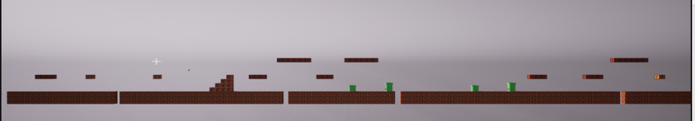

Masters Project 1 - Procedurally Generation of Mario like levels
For my first project of my Masters I wanted to create a system within UE5 that will procedurally generate 2D platformer levels Procedural content generation (PCG) is a method of generating content that is used by developers. Due to the continued growth of the games industry in both the number of gamers around the world and the cost of producing games, manually producing content to the scale and quality that players expect has its limits. There is only so much a developer can produce without reducing the quality of the game content. PCG may be used to address some of these problems, this may be done by automating or aiding the creation of game content. A popular use of PCG in games is procedurally generating levels. The procedural generation of levels not only enables levels to be arguably limitless in scope, but also the reduction in development time, specifically in building and designing levels by hand. The main challenge that developers using procedural level generation is not the quantity of levels generated or size of levels made by a PCG algorithm, it is the quality of the levels that are produced, making sure that the PCG method produces levels that are playable and that are also enjoyable is the main goal of developing a Procedural level generation method. The main Objective of this project is to develop a PCG method within Unreal Engine 5 (UE5) that produces Mario Levels.
For this project I created a constaint based method to procedurally generate 2D platformer Levels aiming for generated output to have a similar layout to a Mario level
Within this project I created other PCG methods to identify their usability in generating 2D platformer level. I created a Cellular Automata approach, its not suitable for the type of platformer this project aims to generate but is a interting approach to generating a cave like level
GitHub link -